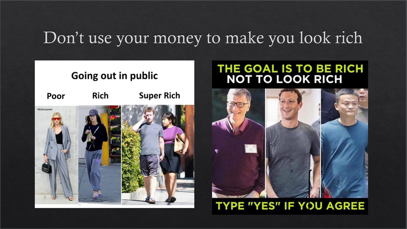
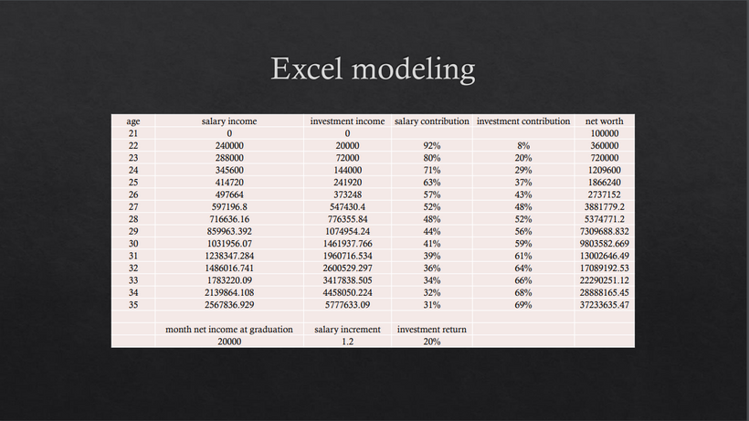

早前獲港大及中大邀請，當了一個關於財務自由講座的嘉賓。對於這話題，我認為所有人也該了解一下。
首先，是財務自由的定義，我認為有數個：
1. 消費時，不用理會價格
2. 生活不需對金錢擔憂
3. 被動收入大於開支
4. 有足夠金錢為你工作
5. 工作/生活可以與金錢無關
下一問題，多錢金錢才足夠？
假設每月開支為3-4萬，再假設投資能有6%年回報，4萬x12個月/6%，即800萬hkd；
若假設投資回報4%，4萬x12個月/4%，即1200萬hkd；
不過，如有家室，開支不只4萬。假設一家4口，每月開支變成16萬，16萬x12個月/6%，即3200萬；
假設投資回報4%，16萬x12個月/4%，即4800萬。
因此3200-4800萬為財務自由水平。
小弟有幸達到半財務自由境界，為什麼是半財務自由？因為我消費時仍會關於價格，而且，工作仍與金錢有關。不過，我相信我的path仍值得分享一下。
小時候，我非常窮困，差點連睡覺的地方也沒有。因而令我在12歲時開始研究投資，到14歲便正式開始投資。大學畢業時，成功達到100萬的資產水平，並在畢業5年內達致初步財政自由。重點在於，我大部分財富也是從投資而來。
下一問題，我做了甚麼？總共6點：
1. 及早開始投資
2. 不斷鑽研投資方法
3. 找尋高收入工作
4. 增加收入內源
5. 投資自己（人脈及知識）
6. 節約，低生活水平
1. 及早開始投資
不要猶豫，立即開始投資，享受複式利潤。問題是，甚麼是好的投資呢？定投及分散到不同的優質資產，包括加密貨幣、指數ETF（SPY & QQQ）、主動型ETF（PDBC、GSG、FTGC、BRKK）、房托（0823、VNQ）等等。
2. 不斷鑽研投資方法
盡全力推高Sharpe及Calmar；採用量化、系統化、科學化的投資方法；回測，並以程式作全自動交易，而非聽消息、聽tips、跟朋友投資。幾乎所有資產我也交易過，包括股票、ETF、債券、商品、外匯、加密貨幣、NFT、期貨、期權等等。
3. 尋找高收入工作
向朋友多打探行業前景及薪水，我完全不介意討論收入。愈是抗拒討論這話題，愈低機會財務自由。情形就如，愈抗拒討論性，對性認知便愈差。不斷跟朋友比較及比拼收入，便會愈有動力進步。
找一份與表現掛鉤的工作，如sales、agent、trader，以確保多勞多得。很多人只拿固定薪水，工作便墮進「做又36，唔做又36」的困局。確保人工每年有2成的增加。尤其是如果你的資產少於300-500萬，正職收入便愈重要。
4. 增加收入來源
除了正職以外，我不斷擴展收入來源，如長線投資、短炒、管理社交媒體、寫專欄、做節目、寫software、教投資、賭波賭馬、投初創等等，總之，用盡全力探索所有賺錢機會。
5. 投資自己（人脈及知識）
看書、看專欄、看paper，當然，要帶批判思維，再自己驗證所有聽到及看到的。增加金融、統計學、數學、編程等等的知識。與上進的朋友聊天及學習。我的想法是，所有人也有值得學習的地方。
6. 節約，低生活水平
花錢時關注內在價值。舉例，我會花幾千元買網上課程，也不會花$10買一枝水；我會100萬買股票，也不會花10萬買金錶。一旦你多留意產品的內在價格，你將會對數字更敏感。把錢放進會升值的資產，而非消費品。請戒掉購買昂貴的食物及飲料、服飾及鞋、奢侈品、車、負擔不起的房子等等。千萬別用錢裝身，我們的目標是要成為真正有錢人，而非裝成有錢人。
分享一個錯誤觀念：人需要名貴東西裝身。
事實上，愈裝成有富有的人愈窮。心理學研究到，大多數滿身名牌的人，內心愈空虛，因而要靠外在東西賦予他價值。一個沒內涵的人穿名牌西裝，旁人會認為是假貨。相反，一個有內涵的人穿A貨西裝，旁人卻會認為是名牌。

我身邊有極多二十出頭的朋友白手興家，不消幾年，身家由6位變8位。共通點在於，他們不斷發掘機會，以增加upside。甚麼是upside？友人A只有正職，每日放工後便回家吃飯打機煲劇，因此，他的upside就只是升職；友人B除了正職外，還有創業、拍片、寫網頁、學編程、搞網店、增加人脈，每一項也有upside。相信Law of attraction，你若認為自己不會發達，便不會發達；相反，相信自己會發達的人，不久便會達成財務自由。
假設淨收入2萬，每年人工加2成，再每年達到20%的投資回報。只有這3個「222」的前設，35歲便會有3700萬資產。

後話：財務自由不是終點，錢只是工具，令你獲得自由，更重要的是，你有沒有一些有意義及有價值的事想做，否則，財自後只會感到空虛。不過，於資本主義世界底下，沒錢就萬萬不能。現時，呼吸也要錢（外出要口罩）。沒有錢，沒人會理會你，世界很現實。
不要再浪費人生，從此起，請捉緊每分每秒。